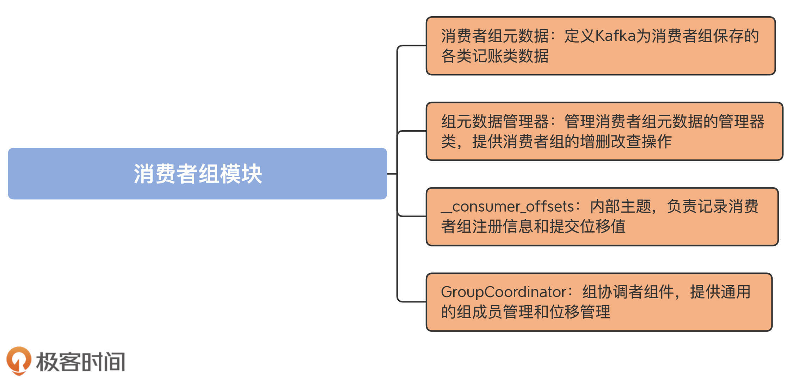
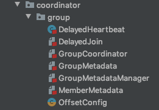
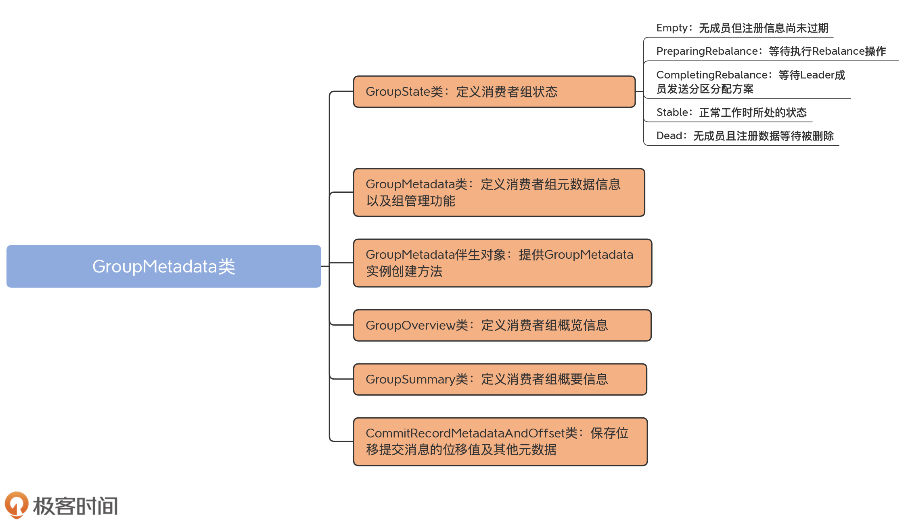
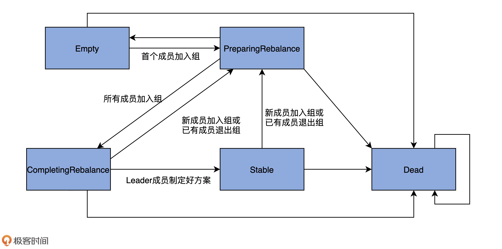
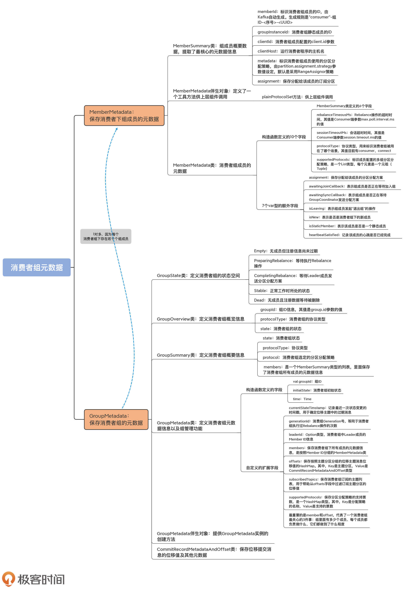

- 00 导读 构建Kafka工程和源码阅读环境、Scala语言热身.md
- 00 开篇词 阅读源码，逐渐成了职业进阶道路上的“必选项”.md
- 00 重磅加餐 带你快速入门Scala语言.md
- 01 日志段：保存消息文件的对象是怎么实现的？.md
- 02 日志（上）：日志究竟是如何加载日志段的？.md
- 03 日志（下）：彻底搞懂Log对象的常见操作.md
- 04 索引（上）：改进的二分查找算法在Kafka索引的应用.md
- 05 索引（下）：位移索引和时间戳索引的区别是什么？.md
- 06 请求通道：如何实现Kafka请求队列？.md
- 07 SocketServer（上）：Kafka到底是怎么应用NIO实现网络通信的？.md
- 08 SocketServer（中）：请求还要区分优先级？.md
- 09 SocketServer（下）：请求处理全流程源码分析.md
- 10 KafkaApis：Kafka最重要的源码入口，没有之一.md
- 11 Controller元数据：Controller都保存有哪些东西？有几种状态？.md
- 12 ControllerChannelManager：Controller如何管理请求发送？.md
- 13 ControllerEventManager：变身单线程后的Controller如何处理事件？.md
- 14 Controller选举是怎么实现的？.md
- 15 如何理解Controller在Kafka集群中的作用？.md
- 16 TopicDeletionManager： Topic是怎么被删除的？.md
- 17 ReplicaStateMachine：揭秘副本状态机实现原理.md
- 18 PartitionStateMachine：分区状态转换如何实现？.md
- 19 TimingWheel：探究Kafka定时器背后的高效时间轮算法.md
- 20 DelayedOperation：Broker是怎么延时处理请求的？.md
- 21 AbstractFetcherThread：拉取消息分几步？.md
- 22 ReplicaFetcherThread：Follower如何拉取Leader消息？.md
- 23 ReplicaManager（上）：必须要掌握的副本管理类定义和核心字段.md
- 24 ReplicaManager（中）：副本管理器是如何读写副本的？.md
- 25 ReplicaManager（下）：副本管理器是如何管理副本的？.md
- 26 MetadataCache：Broker是怎么异步更新元数据缓存的？.md
- 27 消费者组元数据（上）：消费者组都有哪些元数据？.md
- 28 消费者组元数据（下）：Kafka如何管理这些元数据？.md
- 29 GroupMetadataManager：组元数据管理器是个什么东西？.md
- 30 GroupMetadataManager：位移主题保存的只是位移吗？.md
- 31 GroupMetadataManager：查询位移时，不用读取位移主题？.md
- 32 GroupCoordinator：在Rebalance中，Coordinator如何处理成员入组？.md
- 33 GroupCoordinator：在Rebalance中，如何进行组同步？.md
- 特别放送（一）经典的Kafka学习资料有哪些？.md
- 特别放送（三）我是怎么度过日常一天的？.md
- 特别放送（二）一篇文章带你了解参与开源社区的全部流程.md
- 特别放送（五） Kafka 社区的重磅功能：移除 ZooKeeper 依赖.md
- 特别放送（四）20道经典的Kafka面试题详解.md
- 结束语 源码学习，我们才刚上路呢.md
27 消费者组元数据（上）：消费者组都有哪些元数据？
你好，我是胡夕。从今天这节课开始，我们进入到最后一个模块的源码学习：消费者组管理模块。
在这个模块中，我将会带你详细阅读Kafka消费者组在Broker端的源码实现，包括消费者组元数据的定义与管理、组元数据管理器、内部主题__consumer_offsets和重要的组件GroupCoordinator。
我先来给你简单介绍下这4部分的功能，以方便你对消费者组管理有一个大概的理解。
- 消费者组元数据：这部分源码主要包括GroupMetadata和MemberMetadata。这两个类共同定义了消费者组的元数据都由哪些内容构成。
- 组元数据管理器：由GroupMetadataManager类定义，可被视为消费者组的管理引擎，提供了消费者组的增删改查功能。
- __consumer_offsets：Kafka的内部主题。除了我们熟知的消费者组提交位移记录功能之外，它还负责保存消费者组的注册记录消息。
- GroupCoordinator：组协调者组件，提供通用的组成员管理和位移管理。
我把这4部分源码的功能，梳理到了一张思维导图中，你可以保存下来随时查阅：

今天，我们首先学习消费者组元数据的源码实现，这是我们理解消费者组工作机制和深入学习消费者组管理组件的基础。除此之外，掌握这部分代码对我们还有什么实际意义吗？
当然有了。我想你肯定对下面这条命令不陌生吧，它是查询消费者组状态的命令行工具。我们在输出中看到了GROUP、COORDINATOR、ASSIGNMENT-STRATEGY、STATE和MEMBERS等数据。实际上，这些数据就是消费者组元数据的一部分。
bin/kafka-consumer-groups.sh --bootstrap-server localhost:9092 --describe --group mygroup --verbose --state
GROUP COORDINATOR (ID) ASSIGNMENT-STRATEGY STATE #MEMBERS
mygroup 172.25.4.76:9092 (0) range Stable 2
所以你看，我们日常使用的命令和源码知识的联系是非常紧密的，弄明白了今天的内容，之后你在实际使用一些命令行工具时，就能理解得更加透彻了。
好了，我们现在就正式开始今天的学习吧。
就像我前面说的，元数据主要是由GroupMetadata和MemberMetadata两个类组成，它们分别位于GroupMetadata.scala和MemberMetadata.scala这两个源码文件中。从它们的名字上也可以看出来，前者是保存消费者组的元数据，后者是保存消费者组下成员的元数据。
由于一个消费者组下有多个成员，因此，一个GroupMetadata实例会对应于多个MemberMetadata实例。接下来，我们先学习下MemberMetadata.scala源文件。
组成员元数据（MemberMetadata）
MemberMetadata.scala源文件位于coordinator.group包下。事实上，coordinator.group包下的所有源代码，都是与消费者组功能息息相关的。下图是coordinator.group包的源码文件列表，你可以看到，MemberMetdata.scala和稍后我们要学到的GroupMetadata.scala，都在其中。

从这个包结构图中，我们还可以发现后面几节课中要学习的源码类（比如GroupCoordinator、GroupMetadataManager）也都在里面。当然了，你一定也发现了，coordinator包下还有个transcation包，里面保存了Kafka事务相关的所有源代码。如果你想深入学习事务机制的话，可以去阅读下这个包下的源代码。
现在，我们聚焦到MemberMetadata.scala文件，包括3个类和对象。
- MemberSummary类：组成员概要数据，提取了最核心的元数据信息。上面例子中工具行命令返回的结果，就是这个类提供的数据。
- MemberMetadata伴生对象：仅仅定义了一个工具方法，供上层组件调用。
- MemberMetadata类：消费者组成员的元数据。Kafka为消费者组成员定义了很多数据，一会儿我们将会详细学习。
按照难易程度，我们从最简单的MemberSummary类开始学起。
MemberSummary类
MemberSummary类就是组成员元数据的一个概要数据类，它的代码本质上是一个POJO类，仅仅承载数据，没有定义任何逻辑。代码如下：
case class MemberSummary(
memberId: String, // 成员ID，由Kafka自动生成
groupInstanceId: Option[String], // Consumer端参数group.instance.id值
clientId: String, // client.id参数值
clientHost: String, // Consumer端程序主机名
metadata: Array[Byte], // 消费者组成员使用的分配策略
assignment: Array[Byte]) // 成员订阅分区
可以看到，这个类定义了6个字段，我来详细解释下。
- memberId：标识消费者组成员的ID，这个ID是Kafka自动生成的，规则是consumer-组ID-<序号>-。虽然现在社区有关于是否放开这个限制的讨论，即是否允许用户自己设定这个ID，但目前它还是硬编码的，不能让你设置。
- groupInstanceId：消费者组静态成员的ID。静态成员机制的引入能够规避不必要的消费者组Rebalance操作。它是非常新且高阶的功能，这里你只要稍微知道它的含义就可以了。如果你对此感兴趣，建议你去官网看看group.instance.id参数的说明。
- clientId：消费者组成员配置的client.id参数。由于memberId不能被设置，因此，你可以用这个字段来区分消费者组下的不同成员。
- clientHost：运行消费者程序的主机名。它记录了这个客户端是从哪台机器发出的消费请求。
- metadata：标识消费者组成员分区分配策略的字节数组，由消费者端参数partition.assignment.strategy值设定，默认的RangeAssignor策略是按照主题平均分配分区。
- assignment：保存分配给该成员的订阅分区。每个消费者组都要选出一个Leader消费者组成员，负责给所有成员分配消费方案。之后，Kafka将制定好的分配方案序列化成字节数组，赋值给assignment，分发给各个成员。
总之，MemberSummary类是成员概要数据的容器，类似于Java中的POJO类，不涉及任何操作逻辑，所以还是很好理解的。
MemberMetadata伴生对象
接下来，我们学习MemberMetadata伴生对象的代码。它只定义了一个plainProtocolSet方法，供上层组件调用。这个方法只做一件事儿，即从一组给定的分区分配策略详情中提取出分区分配策略的名称，并将其封装成一个集合对象，然后返回：
private object MemberMetadata {
// 提取分区分配策略集合
def plainProtocolSet(supportedProtocols: List[(String, Array[Byte])]) = supportedProtocols.map(_._1).toSet
}
我举个例子说明下。如果消费者组下有3个成员，它们的partition.assignment.strategy参数分别设置成RangeAssignor、RangeAssignor和RoundRobinAssignor，那么，plainProtocolSet方法的返回值就是集合[RangeAssignor，RoundRobinAssignor]。实际上，它经常被用来统计一个消费者组下的成员到底配置了多少种分区分配策略。
MemberMetadata类
现在，我们看下MemberMetadata类的源码。首先，我们看下该类的构造函数以及字段定义，了解下一个成员的元数据都有哪些。
@nonthreadsafe
private[group] class MemberMetadata(
var memberId: String,
val groupId: String,
val groupInstanceId: Option[String],
val clientId: String,
val clientHost: String,
val rebalanceTimeoutMs: Int, // Rebalane操作超时时间
val sessionTimeoutMs: Int, // 会话超时时间
val protocolType: String, // 对消费者组而言，是"consumer"
// 成员配置的多套分区分配策略
var supportedProtocols: List[(String, Array[Byte])]) {
// 分区分配方案
var assignment: Array[Byte] = Array.empty[Byte]
var awaitingJoinCallback: JoinGroupResult => Unit = null
var awaitingSyncCallback: SyncGroupResult => Unit = null
var isLeaving: Boolean = false
var isNew: Boolean = false
val isStaticMember: Boolean = groupInstanceId.isDefined
var heartbeatSatisfied: Boolean = false
......
}
MemberMetadata类保存的数据很丰富，在它的构造函数中，除了包含MemberSummary类定义的6个字段外，还定义了4个新字段。
- rebalanceTimeoutMs：Rebalance操作的超时时间，即一次Rebalance操作必须在这个时间内完成，否则被视为超时。这个字段的值是Consumer端参数max.poll.interval.ms的值。
- sessionTimeoutMs：会话超时时间。当前消费者组成员依靠心跳机制“保活”。如果在会话超时时间之内未能成功发送心跳，组成员就被判定成“下线”，从而触发新一轮的Rebalance。这个字段的值是Consumer端参数session.timeout.ms的值。
- protocolType：直译就是协议类型。它实际上标识的是消费者组被用在了哪个场景。这里的场景具体有两个：第一个是作为普通的消费者组使用，该字段对应的值就是consumer；第二个是供Kafka Connect组件中的消费者使用，该字段对应的值是connect。当然，不排除后续社区会增加新的协议类型。但现在，你只要知道它是用字符串的值标识应用场景，就足够了。除此之外，该字段并无太大作用。
- supportedProtocols：标识成员配置的多组分区分配策略。目前，Consumer端参数partition.assignment.strategy的类型是List，说明你可以为消费者组成员设置多组分配策略，因此，这个字段也是一个List类型，每个元素是一个元组（Tuple）。元组的第一个元素是策略名称，第二个元素是序列化后的策略详情。
除了构造函数中的10个字段之外，该类还定义了7个额外的字段，用于保存元数据和判断状态。这些扩展字段都是var型变量，说明它们的值是可以变更的。MemberMetadata源码正是依靠这些字段，来不断地调整组成员的元数据信息和状态。
我选择了5个比较重要的扩展字段，和你介绍下。
- assignment：保存分配给该成员的分区分配方案。
- awaitingJoinCallback：表示组成员是否正在等待加入组。
- awaitingSyncCallback：表示组成员是否正在等待GroupCoordinator发送分配方案。
- isLeaving：表示组成员是否发起“退出组”的操作。
- isNew：表示是否是消费者组下的新成员。
以上就是MemberMetadata类的构造函数以及字段定义了。它定义的方法都是操作这些元数据的，而且大多都是逻辑很简单的操作。这里我选取metadata方法带你熟悉下它们的编码实现风格。你可以在课后自行阅读其他的方法代码，掌握它们的工作原理。
我们看下metadata方法的代码：
def metadata(protocol: String): Array[Byte] = {
// 从配置的分区分配策略中寻找给定策略
supportedProtocols.find(_._1 == protocol) match {
case Some((_, metadata)) => metadata
case None =>
throw new IllegalArgumentException("Member does not support protocol")
}
}
它实现的逻辑是：从该成员配置的分区分配方案列表中寻找给定策略的详情。如果找到，就直接返回详情字节数组数据，否则，就抛出异常。怎么样，是不是很简单？
组元数据（GroupMetadata类）
说完了组成员元数据类，我们进入到组元数据类GroupMetadata的学习。它位于coordinator.group包下的同名scala文件下。
GroupMetadata管理的是消费者组而不是消费者组成员级别的元数据，所以，它的代码结构要比MemberMetadata类复杂得多。我先画一张思维导图帮你梳理下它的代码结构。

总体上来看，GroupMetadata.scala文件由6部分构成。
- GroupState类：定义了消费者组的状态空间。当前有5个状态，分别是Empty、PreparingRebalance、CompletingRebalance、Stable和Dead。其中，Empty表示当前无成员的消费者组；PreparingRebalance表示正在执行加入组操作的消费者组；CompletingRebalance表示等待Leader成员制定分配方案的消费者组；Stable表示已完成Rebalance操作可正常工作的消费者组；Dead表示当前无成员且元数据信息被删除的消费者组。
- GroupMetadata类：组元数据类。这是该scala文件下最重要的类文件，也是我们今天要学习的重点内容。
- GroupMetadata伴生对象：该对象提供了创建GroupMetadata实例的方法。
- GroupOverview类：定义了非常简略的消费者组概览信息。
- GroupSummary类：与MemberSummary类类似，它定义了消费者组的概要信息。
- CommitRecordMetadataAndOffset类：保存写入到位移主题中的消息的位移值，以及其他元数据信息。这个类的主要职责就是保存位移值，因此，我就不展开说它的详细代码了。
接下来，我们依次看下这些代码结构中都保存了哪些元数据信息。我们从最简单的GroupState类开始。
GroupState类及实现对象
GroupState类定义了消费者组的状态。这个类及其实现对象Stable的代码如下：
// GroupState trait
private[group] sealed trait GroupState {
// 合法前置状态
val validPreviousStates: Set[GroupState]
}
// Stable状态
private[group] case object Stable extends GroupState {
val validPreviousStates: Set[GroupState] = Set(CompletingRebalance)
}
......
这里我只展示了Stable状态的代码，其他4个状态的代码都差不多。为了方便你理解消费者组之间的状态流转，我绘制了一张完整的状态流转图。

你需要记住的是，一个消费者组从创建到正常工作，它的状态流转路径是Empty -> PreparingRebalance -> CompletingRebalance -> Stable。
GroupOverview类
接下来，我们看下GroupOverview类的代码。就像我刚才说的，这是一个非常简略的组概览信息。当我们在命令行运行kafka-consumer-groups.sh --list的时候，Kafka就会创建GroupOverview实例返回给命令行。
我们来看下它的代码：
case class GroupOverview(
groupId: String, // 组ID信息，即group.id参数值
protocolType: String, // 消费者组的协议类型
state: String) // 消费者组的状态
怎么样，很简单吧。GroupOverview类封装了最基础的组数据，包括组ID、协议类型和状态信息。如果你熟悉Java Web开发的话，可以把GroupOverview和GroupMetadata的关系，理解为DAO和DTO的关系。
GroupSummary类
它的作用和GroupOverview非常相似，只不过它保存的数据要稍微多一点。我们看下它的代码：
case class GroupSummary(
state: String, // 消费者组状态
protocolType: String, // 协议类型
protocol: String, // 消费者组选定的分区分配策略
members: List[MemberSummary]) // 成员元数据
GroupSummary类有4个字段，它们的含义也都很清晰，看字段名就能理解。你需要关注的是members字段，它是一个MemberSummary类型的列表，里面保存了消费者组所有成员的元数据信息。通过这个字段，我们可以看到，消费者组元数据和组成员元数据是1对多的关系。
GroupMetadata类
最后，我们看下GroupMetadata类的源码。我们先看下该类构造函数所需的字段和自定义的扩展元数据：
@nonthreadsafe
private[group] class GroupMetadata(
val groupId: String, // 组ID
initialState: GroupState, // 消费者组初始状态
time: Time) extends Logging {
type JoinCallback = JoinGroupResult => Unit
// 组状态
private var state: GroupState = initialState
// 记录状态最近一次变更的时间戳
var currentStateTimestamp: Option[Long] = Some(time.milliseconds())
var protocolType: Option[String] = None
var protocolName: Option[String] = None
var generationId = 0
// 记录消费者组的Leader成员，可能不存在
private var leaderId: Option[String] = None
// 成员元数据列表信息
private val members = new mutable.HashMap[String, MemberMetadata]
// 静态成员Id列表
private val staticMembers = new mutable.HashMap[String, String]
private var numMembersAwaitingJoin = 0
// 分区分配策略支持票数
private val supportedProtocols = new mutable.HashMap[String, Integer]().withDefaultValue(0)
// 保存消费者组订阅分区的提交位移值
private val offsets = new mutable.HashMap[TopicPartition, CommitRecordMetadataAndOffset]
// 消费者组订阅的主题列表
private var subscribedTopics: Option[Set[String]] = None
......
}
GroupMetadata类定义的字段非常多，也正因为这样，它保存的数据是最全的，绝对担得起消费者组元数据类的称号。
除了我们之前反复提到的字段外，它还定义了很多其他字段。不过，有些字段要么是与事务相关的元数据，要么是属于中间状态的临时元数据，不属于核心的元数据，我们不需要花很多精力去学习它们。我们要重点关注的，是上面的代码中所展示的字段，这些是GroupMetadata类最重要的字段。
- currentStateTimestamp：记录最近一次状态变更的时间戳，用于确定位移主题中的过期消息。位移主题中的消息也要遵循Kafka的留存策略，所有当前时间与该字段的差值超过了留存阈值的消息都被视为“已过期”（Expired）。
- generationId：消费组Generation号。Generation等同于消费者组执行过Rebalance操作的次数，每次执行Rebalance时，Generation数都要加1。
- leaderId：消费者组中Leader成员的Member ID信息。当消费者组执行Rebalance过程时，需要选举一个成员作为Leader，负责为所有成员制定分区分配方案。在Rebalance早期阶段，这个Leader可能尚未被选举出来。这就是，leaderId字段是Option类型的原因。
- members：保存消费者组下所有成员的元数据信息。组元数据是由MemberMetadata类建模的，因此，members字段是按照Member ID分组的MemberMetadata类。
- offsets：保存按照主题分区分组的位移主题消息位移值的HashMap。Key是主题分区，Value是前面讲过的CommitRecordMetadataAndOffset类型。当消费者组成员向Kafka提交位移时，源码都会向这个字段插入对应的记录。
- subscribedTopics：保存消费者组订阅的主题列表，用于帮助从offsets字段中过滤订阅主题分区的位移值。
- supportedProtocols：保存分区分配策略的支持票数。它是一个HashMap类型，其中，Key是分配策略的名称，Value是支持的票数。前面我们说过，每个成员可以选择多个分区分配策略，因此，假设成员A选择[“range”，“round-robin”]、B选择[“range”]、C选择[“round-robin”，“sticky”]，那么这个字段就有3项，分别是：<“range”，2>、<“round-robin”，2>和<“sticky”，1>。
这些扩展字段和构造函数中的字段，共同构建出了完整的消费者组元数据。就我个人而言，我认为这些字段中最重要的就是members和offsets，它们分别保存了组内所有成员的元数据，以及这些成员提交的位移值。这样看的话，这两部分数据不就是一个消费者组最关心的3件事吗：组里面有多少个成员、每个成员都负责做什么、它们都做到了什么程度。
总结
今天，我带你深入到了GroupMetadata.scala和MemberMetadata.scala这两个源码文件中，学习了消费者组元数据和组成员元数据的定义。它们封装了一个消费者组及其成员的所有数据。后续的GroupCoordinator和其他消费者组组件，都会大量利用这部分元数据执行消费者组的管理。
为了让你更好地掌握今天的内容，我们来回顾下这节课的重点。
- 消费者组元数据：包括组元数据和组成员元数据两部分，分别由GroupMetadata和MemberMetadata类表征。
- MemberMetadata类：保存组成员元数据，比如组ID、Consumer主机名、协议类型等。同时，它还提供了MemberSummary类，封装了组成员元数据的概要信息。
- GroupMetadata类：保存组元数据，包括组状态、组成员元数据列表，等等。
- 1对多关系：组元数据与组成员元数据是1对多的关系。这是因为每个消费者组下存在若干个组成员。

今天这节课的逻辑不是特别复杂，我们重点学习了消费者组元数据的构成，几乎未曾涉及元数据的操作。在下节课，我们将继续在这两个scala文件中探索，去学习操作这些元数据的方法实现。
但我要再次强调的是，今天学习的这些方法是上层组件调用的基础。如果你想彻底了解消费者组的工作原理，就必须先把这部分基础“铺平夯实”了，这样你才能借由它们到达“完全掌握消费者组实现源码”的目的地。
课后讨论
请你思考下，这节课最开始的工具行命令输出中的ASSIGNMENT-STRATEGY项，对应于咱们今天学习的哪一项元数据呢？
欢迎在留言区写下你的思考和答案，跟我交流讨论，也欢迎你把今天的内容分享给你的朋友。
© 2019 - 2023 Liangliang Lee. Powered by Vert.x and hexo-theme-book.